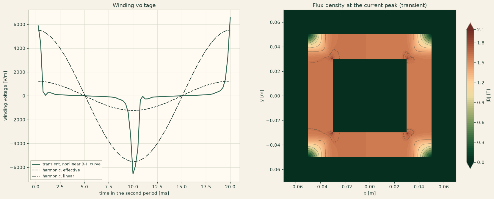
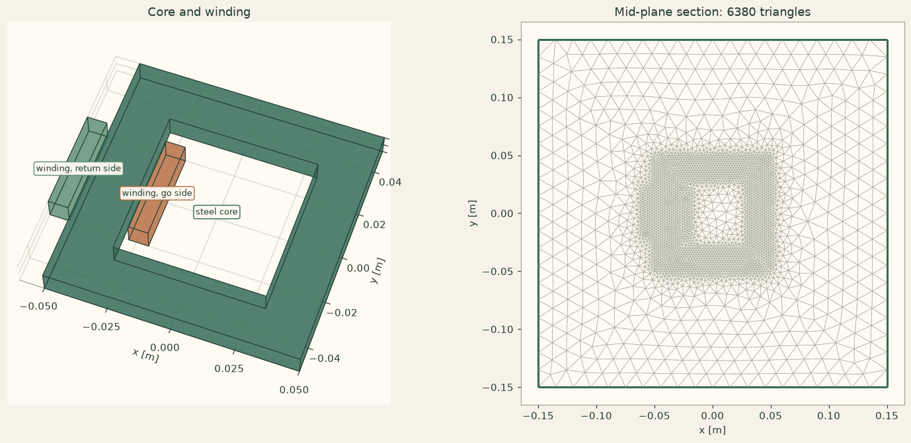

Docs › Examples › Effective B-H curve in a harmonic model against transient saturation
Eddy currents, nonlinear magnetics · 2D
Effective B-H curve in a harmonic model against transient saturation
A 100-turn winding on one leg of a laminated steel frame core is driven at 50 Hz into saturation; a harmonic model with the energy-equivalent effective B-H curve is compared with the transient solution and with the initial permeability.
Run locally with OneSimulation. The example downloads are free. Running them requires an activated runtime. Runtime Alpha 0.2.1a7 · CPython 3.13 on macOS (Apple Silicon), Ubuntu 22.04 (x86-64), and Windows x64. Installation and activation · View pilot plans. Scope of the reference checks.


What it computes
OneSimulation cuts core and winding from STEP parts and solves the 2D vector potential with quadratic triangles three ways: transient over two periods with the nonlinear B-H curve and Newton steps in each BDF2 step, time-harmonic with the effective curve that stores the same cycle-average energy, and time-harmonic with the initial permeability. The fundamental of the transient winding voltage gives the reference inductance. The script that builds the STEP files comes with the notebook.
What it checks
The saturated core gives a transient winding voltage with a third harmonic of 84 % and a fundamental inductance of 995.9 mH/m. The harmonic model with the effective curve gives 976.9 mH/m (-1.9 %) in one solve; with the initial permeability (relative 4974) it gives 4394 mH/m, 4.4 times too much.
Geometry
The notebook starts at the import of the CAD files effective_bh_curve_frequency_domain.step, effective_bh_curve_frequency_domain_core.step, effective_bh_curve_frequency_domain_go.step, effective_bh_curve_frequency_domain_return.step: STEP (AP242), readable by any CAD program, with the names of the faces that the boundary conditions use. Put them next to the notebook.


The geometry script
The script effective_bh_curve_frequency_domain_geometry.py builds the geometry with the CAD objects of OneSimulation and writes the files. Change a dimension there, run it, and run the notebook again.
"""Geometry of the OneSimulation example "Effective B-H curve: harmonic against transient saturation".
Builds with the CAD objects of OneSimulation a square steel core frame of 100 mm x 100 mm with a
60 mm x 60 mm window (legs of 20 mm), a winding of two coil sides around its left leg (inside the
window and outside the core, 8 mm x 40 mm each) and the air around them, a square of 300 mm; all are
10 mm deep. Files: effective_bh_curve_frequency_domain.step (air), effective_bh_curve_frequency_domain_core.step,
effective_bh_curve_frequency_domain_go.step and effective_bh_curve_frequency_domain_return.step.
The example computes on the cross-section z = 5 mm.
"""
from onesim.cad.d3 import Box
depth = 0.01
Box(length=0.3, width=0.3, height=depth, origin=(-0.15, -0.15, 0.0)).save(
"effective_bh_curve_frequency_domain.step"
)
(
Box(length=0.1, width=0.1, height=depth, origin=(-0.05, -0.05, 0.0))
- Box(length=0.06, width=0.06, height=depth, origin=(-0.03, -0.03, 0.0))
).save("effective_bh_curve_frequency_domain_core.step")
Box(length=0.008, width=0.04, height=depth, origin=(-0.028, -0.02, 0.0)).save(
"effective_bh_curve_frequency_domain_go.step"
)
Box(length=0.008, width=0.04, height=depth, origin=(-0.06, -0.02, 0.0)).save(
"effective_bh_curve_frequency_domain_return.step"
)The notebook
The complete notebook, cell by cell. Run it to produce the figures and the comparison printout.
A time-harmonic model assumes that every field varies as \(e^{j\omega t}\); a saturating core does not: its flux density flattens at the peaks of the current and the winding voltage carries harmonics. A harmonic model can still give the fundamental closely if each point of the steel gets an effective permeability that stores the same cycle-average magnetic energy as the nonlinear material at the local field amplitude. OneSimulation does this when EddyCurrents has a frequency and a BHCurve as magnetic response.
The core is a square frame of 100 mm with 20 mm legs of laminated steel (no eddy currents in the laminations); a winding of \(N=100\) turns around its left leg carries \(i(t)=\hat I\sin\omega t\) at 50 Hz with \(\hat I=4\) A, which drives the steel to about 1.6 T. In the plane the vector potential \(A_z\) solves
with \(\nu\) from the B-H curve of the steel (points from 0.5 T at 80 A/m to 2 T at 40 kA/m).
| model | steel | time |
|---|---|---|
| transient | nonlinear B-H curve, Newton in each BDF2 step | two periods, 80 steps each |
| harmonic, effective | energy-equivalent effective curve | phasor at 50 Hz |
| harmonic, linear | initial permeability of the curve | phasor at 50 Hz |
| boundary | condition |
|---|---|
| outer edges of the 300 mm air square | \(A_z=0\) |
Air, core and winding come from the CAD files effective_bh_curve_frequency_domain*.step; the script effective_bh_curve_frequency_domain_geometry.py builds them with the CAD objects of OneSimulation. The two-dimensional model is their mid-plane section.
Reference. The transient solution with the nonlinear curve is exact up to discretization; the fundamental of its winding voltage over the second period, \(V_1=\frac{2}{T}\int_T v(t)\,e^{-j\omega t}\,\mathrm{d}t\), defines the inductance \(L_1=\operatorname{Im}(V_1/I_1)/\omega\) that a harmonic model should reproduce (Lederer, Igarashi, Kost and Honma, IEEE Trans. Magn. 35, 1999, 1214, on effective reluctivities for harmonic analysis).
import numpy as np
from onesim.cad.exchange import load
from onesim.materials import VacuumPermeability, regionwise
from onesim.meshing import TriangularMesher
from onesim.numerics import Numerics
from onesim.numerics.fem import FiniteElement, Lagrange
from onesim.numerics.linear import ComplexSparseDirect, SparseDirect
from onesim.numerics.nonlinear import DampedNewton
from onesim.numerics.time import BDF
from onesim.physics.magnetostatics import (
BHCurve,
Coil,
EddyCurrents,
MagneticInsulation,
coil_current,
coil_impedance,
coil_voltage,
)
from onesim.simulation import Problem, Simulation
from onesim.visualization import plots, theme
theme.set()Geometry and mesh
load returns each part, section its mid-plane. Core and winding sides are embedded regions with triangles of 2 mm, the air grows to 15 mm.
name = "effective_bh_curve_frequency_domain"
cut = lambda part: load(f"{name}{part}.step").section((0, 0, 1), origin=(0, 0, 0.005))
air, core, go, back = (
cut(""),
cut("_core").named("core"),
cut("_go").named("go"),
cut("_return").named("back"),
)
mesh = TriangularMesher(
target_size=0.015,
embedded_regions=(core, go, back),
region_sizes={"core": 0.002, "go": 0.002, "back": 0.002},
).generate(air)
fig = plots.figure(1, 2, size=(14, 6))
plots.geometry(
[
load(f"{name}_{part}.step").named(label)
for part, label in (
("core", "steel core"),
("go", "winding, go side"),
("return", "winding, return side"),
)
],
camera=plots.Camera(elevation=60, azimuth=-70),
title="Core and winding",
ax=fig[0],
)
plots.mesh(
mesh,
groups=("all",),
legend=False,
title=f"Mid-plane section: {mesh.cell_count} triangles",
ax=fig[1],
)
plots.show()Three models
BHCurve(region=core) holds the steel curve inside the core and vacuum outside. The laminations leave the core a tiny effective conductivity of 100 S/m (penetration depth 0.1 m, no eddy-current effect on a 20 mm leg). The winding is a stranded Coil with its return side; the transient model feeds it with a function of time.
steel = BHCurve(
flux_density=(0.5, 1.0, 1.3, 1.5, 1.6, 1.7, 1.8, 2.0),
field_strength=(80, 150, 300, 700, 1500, 3500, 8000, 40000),
region=core,
)
mu0, turns, amplitude, frequency = (
float(VacuumPermeability().evaluate()),
100,
4.0,
50.0,
)
omega = 2 * np.pi * frequency
initial = 0.5 / (80 * mu0)
conditions = lambda model: (
MagneticInsulation(boundary=air.boundaries.all, physics=model),
)
solver = SparseDirect()
transient_coil = Coil(
go, return_region=back, turns=turns, current=lambda t: amplitude * np.sin(omega * t)
)
laminated = regionwise({"core": 100.0}, default=0.0, unit="S/m")
transient = EddyCurrents(
domain=air.domain(),
permeability=VacuumPermeability(),
magnetic_response=steel,
coils=(transient_coil,),
conductivity=laminated,
)
period, steps = 1 / frequency, 80
history = Simulation(
problem=Problem(
name="Core, transient",
geometry=air,
physics=(transient,),
boundary_conditions=conditions(transient),
),
mesh=mesh,
numerics=Numerics(
spatial=FiniteElement(element=Lagrange(order=2), quadrature_order=4),
linear_solver=solver,
time_integrator=BDF(order=2),
nonlinear_solver=DampedNewton(
linear_solver=solver,
relative_tolerance=1e-7,
absolute_tolerance=1e-9,
maximum_iterations=60,
),
),
).run(start_time=0.0, end_time=2 * period, time_step=period / steps)
harmonic = {}
for label, response, permeability in (
("effective", steel, VacuumPermeability()),
("linear", None, regionwise({"core": initial * mu0}, default=mu0, unit="H/m")),
):
coil = Coil(go, return_region=back, turns=turns, current=amplitude)
model = EddyCurrents(
domain=air.domain(),
permeability=permeability,
magnetic_response=response,
frequency=frequency,
coils=(coil,),
conductivity=laminated,
)
result = Simulation(
problem=Problem(
name=f"Core, harmonic {label}",
geometry=air,
physics=(model,),
boundary_conditions=conditions(model),
),
mesh=mesh,
numerics=Numerics(
spatial=FiniteElement(element=Lagrange(order=2), quadrature_order=4),
linear_solver=ComplexSparseDirect(),
),
).solve_stationary()
harmonic[label] = (result, model, coil, coil_impedance(result, model, coil))Results
The fundamental of the transient voltage over the second period against the two harmonic models, as inductance per metre of depth and as amplitude of the winding voltage.
times = np.array(history.times)
last = times[times > period - 1e-12][1:]
voltage = np.array(
[coil_voltage(history, transient, transient_coil, time=t) for t in last]
).real
current = np.array(
[coil_current(history, transient, transient_coil, time=t) for t in last]
).real
fundamental = lambda signal: 2 / len(last) * np.sum(signal * np.exp(-1j * omega * last))
V1, I1 = fundamental(voltage), fundamental(current)
L1 = (V1 / I1).imag / omega
print(
f"initial relative permeability of the steel {initial:.0f}; peak current {amplitude:.1f} A"
)
print(
f"transient, nonlinear: fundamental of the voltage {abs(V1):.4f} V/m, L1 = {1e3 * L1:.4f} mH/m, "
f"third harmonic {100 * abs(2 / len(last) * np.sum(voltage * np.exp(-3j * omega * last))) / abs(V1):.1f} % of the fundamental"
)
print("harmonic model L [mH/m] against the transient fundamental |V| [V/m]")
for label, (result, model, coil, impedance) in harmonic.items():
inductance = impedance.imag / omega
print(
f"{label:17s} {1e3 * inductance:9.4f} {100 * (inductance / L1 - 1):+30.2f} % {abs(impedance) * amplitude:12.4f}"
)With the effective curve the harmonic model gives the inductance of the saturated core within a few percent, at the cost of one linear-sized solve; with the initial permeability it overestimates it several times, because it does not see the saturation at all.
Figure
The winding voltage over the second period from the transient model with the sine of each harmonic model, and the flux density in the core at the current peak of the transient model.
phase = np.exp(1j * omega * last)
fig = plots.figure(1, 2, size=(15, 6))
plots.line(
x=1e3 * (last - period),
y={"transient, nonlinear B-H curve": voltage},
reference={
f"harmonic, {label}": (
1e3 * (last - period),
np.real(impedance * amplitude * phase / 1j),
)
for label, (_, _, _, impedance) in harmonic.items()
},
xlabel="time in the second period [ms]",
ylabel="winding voltage [V/m]",
title="Winding voltage",
legend="lower left",
ax=fig[0],
)
plots.surface(
history.field(transient.magnetic_flux_density),
time=period * 1.25,
component=lambda B, position: np.linalg.norm(B[:, :2], axis=1),
limits=(0, 2.0),
contours=11,
subdivisions=2,
xlimits=(-0.07, 0.07),
ylimits=(-0.07, 0.07),
xlabel="x [m]",
ylabel="y [m]",
label="|B| [T]",
title="Flux density at the current peak (transient)",
ax=fig[1],
)
plots.show()Going further
Add a small air gap in the right leg in effective_bh_curve_frequency_domain_geometry.py: the gap linearizes the core and the effective and linear models move closer together.